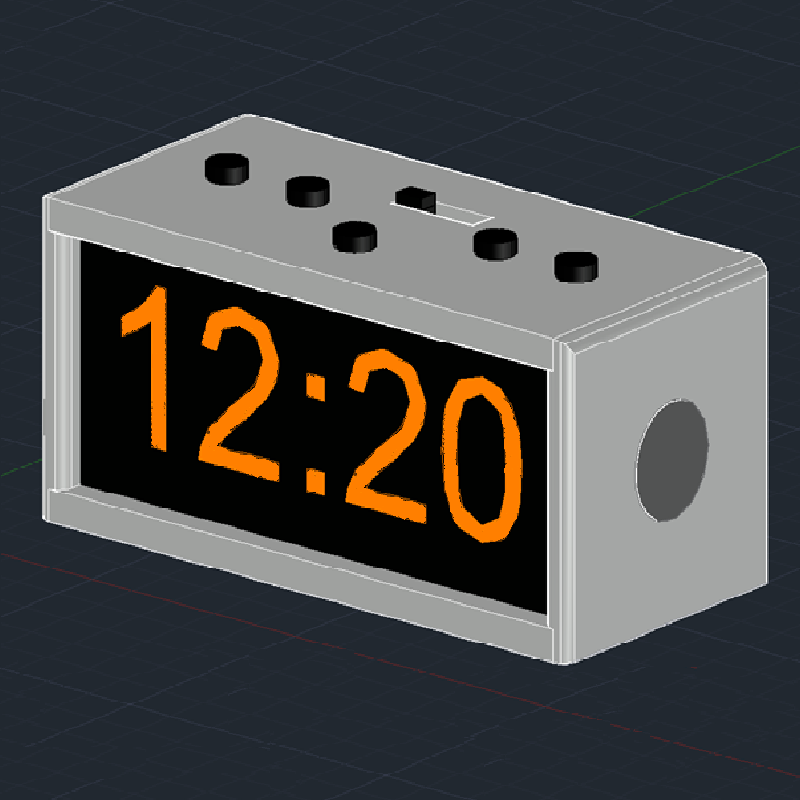

Completed Aug 2017
This was a project for ECE 299, a second-year design course at UVic. The alarm clock uses an stm32F407 microcontroller attached to a custom-made PCB. The PCB features an amplifier circuit to play audio signals from an MP3 file attached via USB to the microcontroller. The alarm can be set in either 12 or 24-hour mode, and has features to snooze, set, and enable/disable the alarm. All the firmware for the project was written in C.

The goals for the project were to have a fully functional product that was small, easy to use, and was relatively cheap to manufacture. The initial circuits for the project were designed using KiCAD EDA which were then transferred into a PCB schematic. The amplifier circuit used an LM386 op-amp and used a 0-10k ohm potentiometer as a variable resistor to control the volume. The seven-segment display featured modes for both 12 and 24-hour clocks which was directly fed from microcontroller.
Two designs were made for the alarm clock. The first was the functional prototype as seen in the photo below. And the second was a production quality version as seen above. The production quality design has a larger screen and hidden speakers with sleek buttons and rounded corners. The functional prototype was designed to be 3D printed and act as a housing for the prototyping and debugging.
The PCB was designed on KiCAD EDA and was printed by Alberta Printed Circuits. The footprint of the design was minimized as much as possible but also to allow room for the components to be soldered onto the board. Each portion of the circuit was segmented into its own area of the PCB with all the push buttons occupying the top, microcontroller the middle, op-amp circuit on the left, and the 7-segment display on the right. Rows of resistors and capacitors were aligned on the board to be aesthetically pleasing as the design was to be designed to be a commercial product.
The firmware for the alarm clock was written in C. It allows for controls of the clock time, alarm time, recognizing the alarm interrupt and playing the MP3 files, configuring the display, and snoozing the alarm.
The display of the alarm was through a seven-segment LED display. The decoder for the display was programmed in the Display7Segment(int segment, int number) function where it accepted the segment number, and the number to be displayed. Since the LED display had 4 separate numbers, the display cycled at a rate of 500Hz, (2ms delay) for each segment using the TIM5_IRQHandler() function.
The alarm was handled through the SetAlarm (void) and GetAlarmTime(void) functions. The control for the alarm time was handled through three buttons. One button for entering the SetAlarm function, and two to change the hours and minutes of the alarm. The clock time was also handled with three buttons: one to enter the SetClock function, and two buttons to change the hours and minutes.